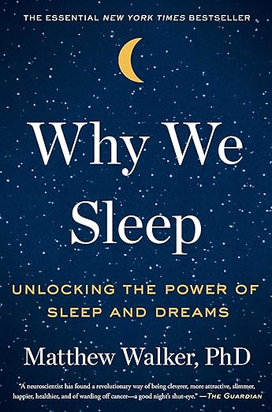

Why We Sleep
cscccby Matthew Walker
⭐️ Rating: 9/10
🧠 Biggest Takeaways
- Sleep affects every major function of our body — from memory to immune health.
- REM and deep sleep play distinct roles in creativity and learning.
- Sleep evolved for million years and all animals need to sleep in one form or another
💭 General Impression
I loved learning more about sleep as its something that is such a integral part of everyones life and I knew so little about it. I thought the Author put himself into the book a bit too much and it often ended up annoying me. He came off as a white knight. The book was easy to read and really stressed how important it is to prioritize sleep. That is fine, I know sleep is important, however being told about the numerous adverse effects of a lack of sleep does not help one relax and go to sleep at night. It often felt like. You, and your life will be worse in every way if you don’t sleep enough; Ok, Good night. I also felt some of the studies particularly when it comes to drugs effect on sleep where done missing the point of why someone takes drugs to sleep. If someone is extremely stressed to the point where they wont sleep without aid. The inorganic drug induced sleep surely must be better than no sleep at all. This book does make me wonder whether part of my many problems is my inability to fully sleep. My garmin watch only ever gives me a max sleep score of 70. Do I ever sleep adequately? How do I know if I sleep adequately? Would I be a superhuman if I always got 8 hours of high quality sleep? These are the questions that keep me up at night. t the
📜 Quotes
““The best bridge between despair and hope is a good night’s sleep.”
“Practice does not make perfect. It is practice, followed by a night of sleep, that leads to perfection.”
“If sleep does not serve a absolutely vital functions then it is the biggest mistake the evolutionary process has ever made”
👤 Who Should Read It?
I think everyone should read this book. Everyone sleeps after all. I think this book is especially important for people who don’t get at least 7 hours of sleep every night. This goes double for people who think they function well off 6 hours of sleep a night. (unfortunately, you most likely do not)
☘️ How the Book Changed Me
📒 Summary + Notes
- The circadian rhythm is your bodies internal clock that signals to all other parts of your body when it is time to be asleep and when it is time to be awake.
- The circadian rhythm is on a 25 hour time scale and it releases melatonin to signal to the brain and body that it is time to go to sleep.
- The brain uses daylight as the main signal to reset the cicadian rhythm to coincide with daytime.
- Peoples circadian rhythms are different and some people are naturally shifted forward or backward in the day leading to early risers and late risers.
- Adenosine is a chemical that builds up in your brain when one stays up. It causes sleep pressure and the urge to sleep that comes with it. Caffeine works by attaching to the receptors that attach to adenosine effectively “blocking” it. This means caffeine keeps at bay sleep pressure and makes you feel awake. Sleep of course also reduces adenosine
- A good way to tell of your getting enough sleep is if you feel drowsy through the day. Another good way is seeing how long you would sleep without a alarm. IF it it much longer than you would sleep with your alarm then its not enough. The body is generally good at knowing what it needs.
- There are two types of sleep : REM and non-REM or NREM
- REM stands for rapid eye movement as your eyes move rapidly back and forth when one is in this stage of sleep.
- in REM sleep the brain waves are nearly identical to when we are awake. This is when we are dreaming.
- There are 4 stages of NREM sleep with stages 3 and 4 being slow wave sleep. The brain waves are slow and melodic in this stage of sleep
- Our brain cycles through all 4 stages of NREM sleep and then REM sleep in 90 minute cycles that repeat fairly uniformly. However we tend to get most of our REM sleep in teh second half of the night.
- All animals sleep in some form or another
- Animals that evolved earlier do not show signs of partaking in REM sleep
- Animals sleep in distinct ways, some birds can sleep with half of their brain at one time
- We are Biphasic sleepers. We are hard wired to have a dip in alertness mid afternoon that often coincides with a nap. These naps are healthy and lead to a longer life span
- Human sleep less than other primates and yet our sleep is filled with more REM sleep.
- This increased REM sleep is part of the reason Humans are smarter than other primates. Or maybe as we got smarter we needed more REM sleep to upkeep the increasingly complex connections within our brains
- REM sleep creates the connections within our brain
- Babies just prior to being born consume more sleep than at any other time in the human life span- Nearly 12 hours a day.
- A lack or REM sleep in babies leads to problems with brain development.
- Autism is correlated with a lack of REM sleep
- A reason that mothers should not drink while pregnant is because it reduced the babies REM sleep and therefore can impair the brain development of the brain. Alcohol in breast milk can do the same
- As the child gets older the proportion of NREM sleep increases. NREM sleep serves to refine and prune the connections within our brain. This essentially remodels our brain to work more efficiently. Connections that are used more often are made more robust and connections that are more rarely used are reduced. This is the brain maturing. It matures from front to back and the frontal lobe which controls our rational thinking is the last thing to be pruned by NREM sleep and therefore the last thing to develop. This is why teenagers are often irrational
- People with schitzofrenia have non-regular NREM sleep suggesting a problem in the maturing of
the brain, potentially causing schizophrenia.
- NREM sleep does synaptic pruning which matures our brain how interesting is that.
- Children's Circadian rhythm are longer and shifted earlier in the day.
- Teenagers Circadian rhythm gets shifted later in the day. This is why they want to go to bed late and sleep in.
- As we age we get less and less Deep wave NREM sleep. this starts in our late 20’s
- Seniors often sleep less and yet they don’t need less sleep. This lack of sleep in seniors can be a reason for the mental and physical decline faced by seniors.
- This lack of ability to sleep for seniors is caused by a weakening of circadian rhythm and reduction of the melatonin being released.
- Older adults don’t need less sleep, it is just harder for them to sleep sufficiently
- sleep the night before learning refreshes our ability to intake new information into short term memory.
- sleep the night after learning consolidates what is learned into long term memory
- NREM sleep (beginning of the night) transfers the memory packets from short term learning (hippocampus) to long term learning (neocortex)
- NREM sleep, particularly sleep spindles which are burst of brain activity in stage 2 NREM sleep, help to consolidate memories that need to be consolidated and forget memories that need not be remembered. The more sleep spindles that occur the more effectively this happens
- sleep helps create muscle memory. People are better able to perform practice skilled like that of the piano after a night of sleep.
- This is only tangentially related but rate of injury in athletes is reduced with adequate sleep. Performance is increased. As if I wasn’t already convinced as to the miracle of sleep
- Sleep makes you more creative, particularly rem sleep
- sleep reduces your attention span. Mini sleeps while driving are especially dangerous
- people do not know how sleep deprived they are when they are sleep deprived. The conscious brain is not aware of the lack of sleep. The unconscious brain surely keeps the score though
- The people that can actually function well off 6 hours a night of sleep, and yes there is a gene for that, make up only .5% of the population. So, no. Its probably not you.
- A lack of sleep makes people emotionally volatile. They swing from jubilant to angry to depressed with reduced ability to control swings
- Loss of control over the brain from the prefrontal cortex( does our planning, impulse control, decision making, problem solving) This is really what makes humans smart. You want this working at 100%
- Brain activity resembles that of people with neurological diseases when sleep deprived. The two are profoundly linked.
- There is no major psychiatric disorder in which sleep is normal.
- pulling all nighters is a terrible study technique. That is a shocker.
- ALzheimers disease is associated with a toxic form of protein called beta-amyloid. This amyloids builds up in parts of the brain and kills the nearby neurons. This deteriorates the brain cells and brain as a whole. However this “amyloid” protein only groups up in certain parts of the brain.
- One of the areas that the amyloids group up is in the middle part of the frontal lobe, the same part that generates slow wave deep NREM sleep. Reduced NREM sleep can be a sign and maybe even predictor of Alzheimer’s
- The brain has the glymphatic system, which is like the lymphatic system, but in the brain. This glymphatic system is much more active while sleeping, around 15 times more active. Cells even shrink within the brain while sleeping to allow the cerebral spinal fluid that is the mean of the glymphatic system to more effectively clear away waste product. One of the proteins cleared away is amyloid. Therefore a persistent lack of sleep increases chances of early onset alzheimer’s
- People with sleep disorders are more likely to get alzheimer’s. because of the above
- sleep deprivation negatively effects essentially every single physical function and system of the body
- Sleep deprivation greatly increases the chances of stroke or heart disease as we age. This is because sleep loss accelerates the heart rate and increases blood pressure weakening vein walls.
- Essentially sleep deprivation puts your body into a somewhat fight or flight reaction. This comes with it all the well known negatives of having too much stress
- Sleep loss raises your blood sugar which can lead to diabetes and all its terrible complications
- People eat more calories and more unhealthily when sleep deprived
- when people do lose weight when sleep deprived more of it comes from lean body mass rather than fat. That is surely not ideal
- sleep deprivation drastically lowers your testosterone. This subsequently causes all kinds of unfortunate side effects. People with sleep disorders were found to have the testosterone of someone 15 years their senior.
- People note sleep deprived people to be less attractive. How they know I am not certain, but they know.
- Sleep loss reduces the immune response. People who were sleep deprived created 50% less antibodies after receiving the flu vaccine then people who were getting sufficient sleep.
- A single night of bad sleep can sweep away many of your killer cells essentially leaving you immunodeficient ( I am not sure how this one is true, but its what the book says)
- Cancer growth was much more aggressive in sleep deprived mice the tumors grew quicker and were more likely to metastasize
- Lack of sleep can cause the immune system to over react and have a sustained inflammatory response. This can cause cancer to spread more aggressively but also means arthritic diseases are negatively impacted by sleep deprivation, potentially keeping flair ups active for longer.
- The reason for probably a lot of the aforementioned negative effects is that sleep loss will damage your DNA and how they are transcribed. It can cause some genes to express themselves too much and others to express themselves not at all. This can cause and worsen and uncountable number of problems.
- Similar sleep damages the capstone telomeres (binding ends of DNA strands). Someone who is chronically sleep deprived will have the damaged telomeres of someone decades their senior. Medical residents were found to have very damaged telomeres as a result of program forced sleep deprivation.
- Dreams as we know them (nuanced and intricate) happen only during REM sleep.
- REM sleep and dreams help to take the emotional hurt out of hurtful experiences. It takes a experience and most usefully removes the emotional baggage attached to it.
- Sleep is what heals emotional wounds.
- PTSD patients are treated with drugs that help increase REM sleep this subsequently helped them get over the emotional trauma of their past and the PTSD with it.
- sufficient REM sleep helps people distinguish between emotions. People who had had insufficient REM sleep had decreased ability to accurately read the social world arround them.
- Dreaming and REM sleep helps connects parts of your brain that are not often connected. This increased creativity. People who were woken up from REM sleep were more likely to solve a creativity puzzle than their awake baseline or people who had been woken up from a different stage of sleep.
- Many great discoveries come to people in dreams. One example of this is the periodic table.
- Lucid dreamers are real and can in fact control their dreams.
- Not being able to sleep for long enough will indeed kill you. Not directly but your immune system will shut down and your own gut bacteria will spread through your body and kill you. That is if something else doesn't get your first. Yes, this is a very rare condition and it has happened before.
- Modern light will keep you awake
- Get light in the morning to wake you up.
- Alcohol does not help you sleep. it just sedates you and also stops you from generating REM sleep. It is in fact very harmful for your sleep/
- Sleeping in a cold room with help you sleep by lowering your core body temperature.
- Sleeping pills induce unnatural sleep. it more sedates you then puts you to sleep. This means it lacks the sleep cycles and rhythm of natural sleep and therefore lacks the benefits of natural sleep
- People who take sleeping pills are more likely to die earlier.
- sleeping pills often do not help people fall asleep faster than they would without the sleeping pills.
- Cognitive behavioral sleep therapy is the best way to improve sleep. It is essentially sleep hygiene. Most of the practices of good sleep hygiene are generally known
- Work places do not support health sleep habits this results in less productive workers and lost economic value.
- All places of work and learning should prioritize sleep and will see better results as a policy.
- Everyone should be sleeping more and people should be prioritizing sleep more.
Sleep is absolutely Vital.
This is the almanac of all sleep knowledge. It will tell everything you need to know about sleep, and maybe most of what we know about sleep. All your sleep questions answered here with plenty of science and evidence to back up the claims. Good for tips on how to improve your sleep and the reasoning for why you should want to/
Part 1 - This Thing Called Sleep
Chapter 1 - To Sleep . . .
We spend a third of our life sleeping
It was not too long ago that we knew very little about sleep
Society has a apathy towards sleep that can be explained by the fact that we used to not know why we need it.
Chapter 2 - Caffeine, Jet Lag, and Melatonin
Chapter 3 - Defining and Generating Sleep
Chapter 4 - Ape Beds, Dinosaurs, and Napping with Half a Brain
How Should We Sleep?
Chapter 5 - Changes in Sleep Across the Life Span
Childhood Sleep
Sleep in Midlife and Old Age
Part 2 - Why Should You Sleep?
Chapter 6 - Your Mother and Shakespeare Knew
all types of sleep are equally necessary to function well and the different stages of sleep happen at different stages of the night. So cutting of the beginning or end of your sleep can cause similar undesirable and yet distinct problems.
The Benefits of Sleep for the Brain
Sleep for Other Types of Memory
Sleep for Creativity
Chapter 7 - Too Extreme for the Guinness Book of World Records
Pay Attention
Emotional Irrationality
Tired and Forgetful?
Sleep and Alzheimer’s Disease
Chapter 8 - Cancer, Heart Attacks, and a Shorter Life
Sleep Deprivation and the Body
Sleep Loss and the Cardiovascular System
Weight Gain and Obesity
Sleep Loss and the Reproductive System
Sleep Loss and the Immune System
Sleep Loss, Genes, And DNA
Part 3 - How and Why We Dream
Chapter 9 - Routinely Psychotic
Chapter 10 - Dreaming as Overnight Therapy
Dreaming - The Soothing Balm
Dreaming to Decode Waking Experiences
Chapter 11 - Dream Creativity and Dream Control
Dreaming: The Creative Incubator
Part 4 - From Sleeping Pills to Society Transformed
Chapter 12 - Things That Go Bump in the Night
Sleep Disorders and Death Caused by No Sleep
Chapter 13 - iPads, Factory Whistles, and Nightcaps
What’s Stopping You from Sleeping?
Turning Down the Nightcap - Alcohol
Get the Nighttime Chills
Chapter 14 - Hurting and Helping Your Sleep
Pills vs. Therapy
Should You Take Two of These Before Bed?
Don’t Take Two of These, Instead Try These
Chapter 15 - Sleep and Society: What Medicine and Education Are Doing Wrong; What Google and NASA Are Doing Right
Sleep and Health Care